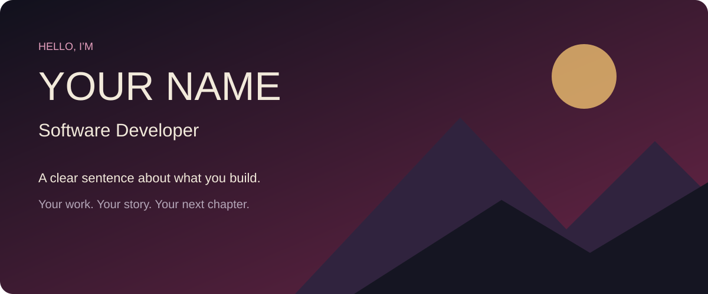
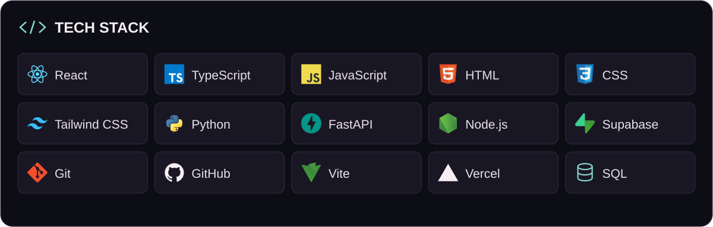

Get your starter
Download the ZIP below. It contains the profile layout, editable artwork and a short guide.
Your name. Your work. Your GitHub. A free starter and one guided AI prompt to help you make it yours.


Illustrative starter preview. Your AI replaces the sample content.
No need to understand repositories before you start. The prompt walks you through it.
Download the ZIP below. It contains the profile layout, editable artwork and a short guide.
Attach the ZIP to ChatGPT, Claude or Gemini. Paste the prompt and answer a few short questions.
Review your version. Your AI guides you through putting it on your own GitHub profile.
First download the template. Then copy the prompt and attach the ZIP in a new AI chat.
Editing files and showing previews depend on the AI tool and plan. You can review the files before publishing.
A profile README appears directly on GitHub. You do not need separate hosting.